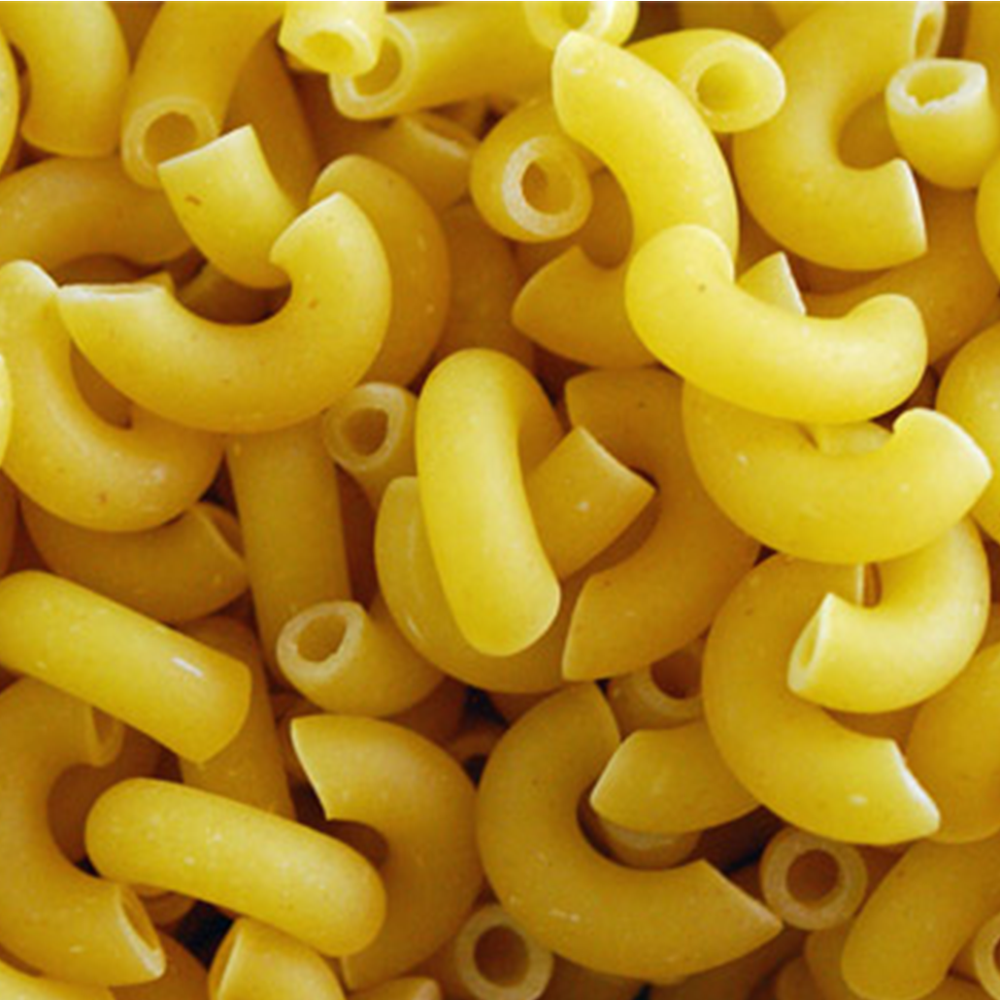
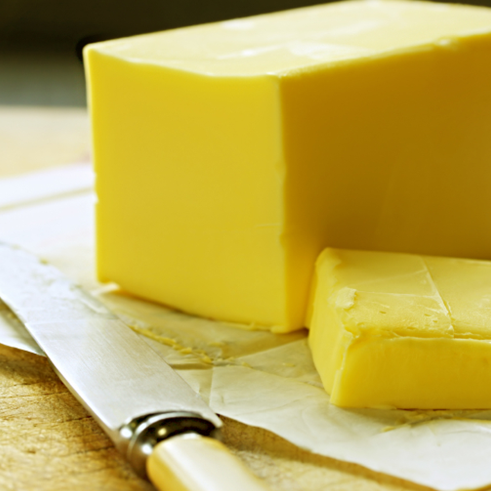
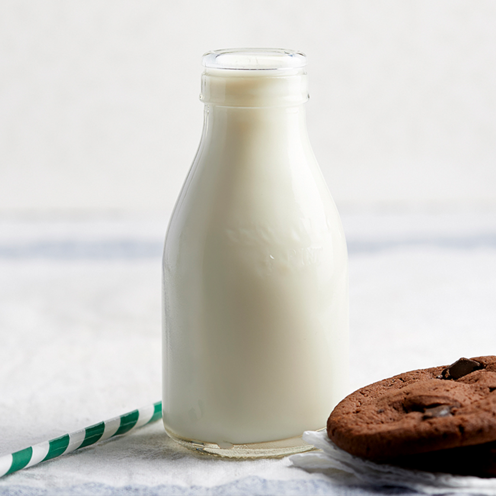
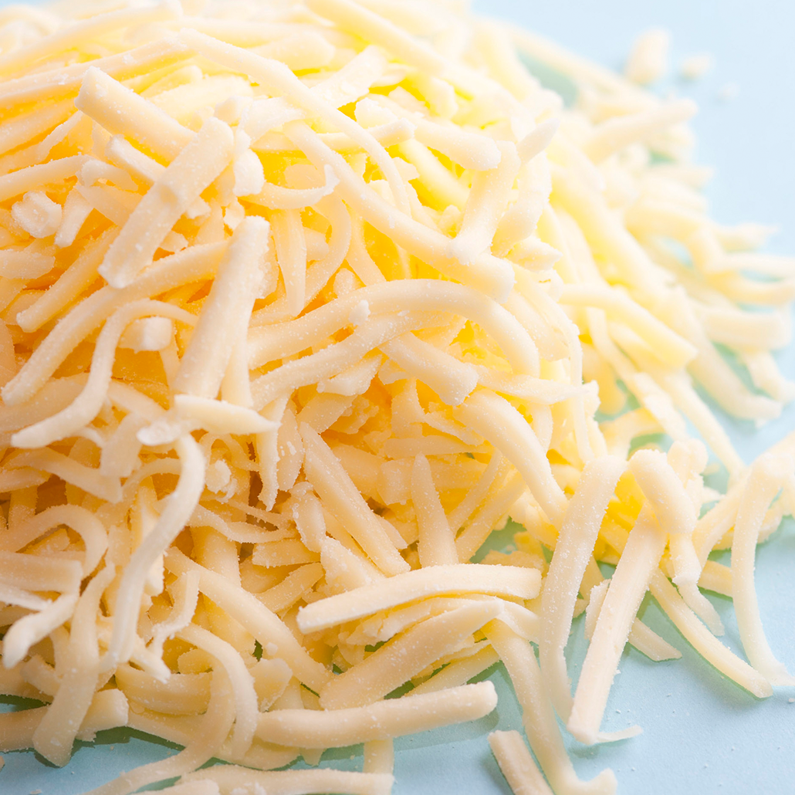
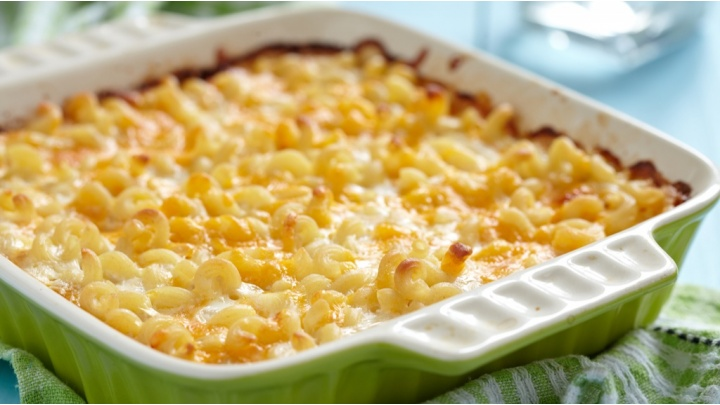

Serves
Preparation time
Ingredients
- 250g macaroni
- 1 tbsp butter
- 1 tbsp plain flour
- 450ml milk
- Cheddar cheese, grated
- 1 tsp black pepper
- 1 tsp mustard powder
Method
-
Cook the macaroni according to the packet instructions and drain when cooked
 -
Heat the butter (or margarine) and when melted, add a generous tablespoon of plain flour and mix it inAdd some black pepper and a little nutmeg or mustard powder - cook on a low heat, stirring all the time, for about 30-60 seconds
 -
Add the milk a little at a time and mix well with a whisk - you should end up using about 450ml of milk
 -
Bring to the boil, stirring all the time, to thicken the sauce, then add a big handful of grated cheddar cheese to make it a cheese sauce
 -
Add the drained pasta to the cheese sauce and stir well
-
Serve straight away or put into an oven proof dish, grate some more cheese over and bake at 180'C/Gas mark 5 for 10 minutes
